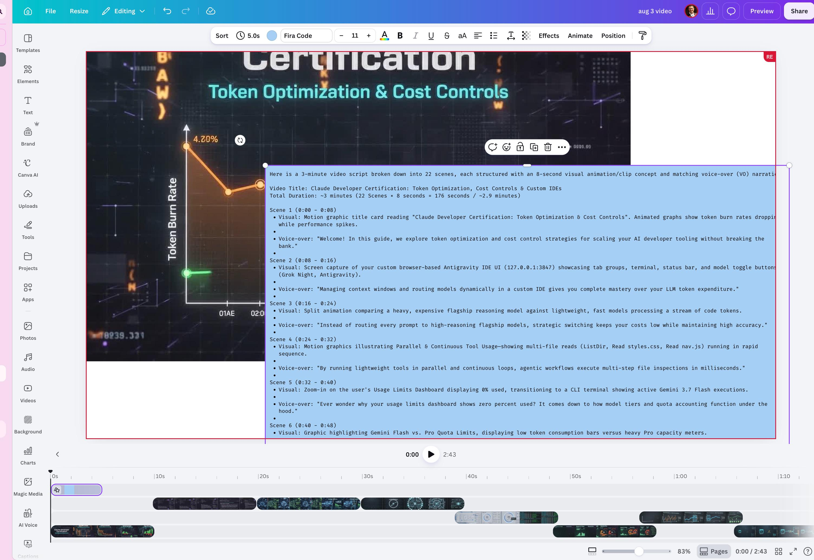

Video Production Stages Breakdown & Timing Matrix
How much time does each stage take? Total ~2h 15m turnaround across all 8 modular stages.
Stage 1: Skool Ideation & Research (Pre-Prod Setup)
Duration: ~15-20 min • Extract source material, capture subject research pictures, and define signature stylistic elements.
Animation in the real world: Blend real terminal & IDE screen captures (127.0.0.1:3847) with cartoon characters and La Linea minimalist continuous line overlays via Google Flow to create high-energy toon-meets-reality visuals.
Recorded in your own voice: crisp, authoritative, energetic cadence with steady ~18-22 words per 8-second window.
Stage 2: Gemini Script & 8-Second Prompt Engineering
Duration: ~10-15 min • Transform raw subject matter into a rigorous 22-scene pacing framework with synchronized visual concepts and VO.
Stage 2.5: Split-View Generation Workflow Simulation
Duration: ~5 min • Real-time side-by-side production setup: Gemini (Script Engine) paired with Google Flow (Video Render Engine).

🤖 Right Pane: Gemini Prompt Engine
The user provides research screenshots of the Antigravity CLI IDE (127.0.0.1:3847) and telemetry dashboard. Gemini acts as the Director, outputting the structured 22-scene × 8-second visual concepts and synchronized voice-over script.
🎬 Left Pane: Google Flow Render Engine
Operating project 25 Aug, 14:00 aug video 3 in the FlyWheelMVP tab group. The visual prompt from Scene 1 is fed into Flow to generate the first 8-second motion graphic slice.
🪙 15-Credit Approval Mechanism
Each 8-second generation costs 15 credits. The dialog prompts: "Would you like me to kick off this 1 video generation, costing 15 credits?" Selecting "Approve, do not ask again" enables high-speed batch generation.
🗂️ FlyWheelMVP Tab Group Navigation
Integrated multi-tab workstation keeping Skool classroom, YouTube analytics, GitHub repository, and Antigravity CLI terminal immediately accessible for instant asset referencing.
📝 Canva Prod Stage: Read & Check for Footage Gaps (Sliding Post-it)
🔍 View on GitHub ↗
🟨 Sliding Post-it Script Overlay
The full 22-scene script is placed inside a floating text box on top of the live video canvas in project aug 3 video. This allows seamless reading without switching between separate windows.
🔍 Main Issue: Sorting Footages & Gap Detection (Shotlist in Hand)
The primary bottleneck in production is sorting footages and catching gaps before post-production starts. By scrubbing across the 0:00 to 2:43 timeline with the 22-scene shotlist in hand, the creator catches missing clips, track misalignments, or black gaps between 8s scenes before VO recording.
⏱️ 8s Pacing & Continuity Sync
Ensures that each Google Flow footage aligns perfectly with the 18–22 word Post-it narration beat before locking the visual track and advancing to Post-Prod voice recording.
🗃️ Move to 'used asset' Confirmation
Once a footage clip is visually confirmed against the shotlist on the track with zero gaps, it is moved from aug video 3 into the used asset subfolder.
Stage 3: Google Flow / Video Footage Generation
Duration: ~25-35 min • Generate 8-second motion graphic visual clips for each scene using Google Flow & Veo prompt templates.
Copy individual visual prompts from the Storyboard section or copy all 22 Google Flow prompts in a single batch file.
Stage 4: Canva 3-Section Production Suite & Azure Files Sync
Duration: ~30-45 min • Organize project timeline into Pre-Prod, Prod, and Post-Prod with real-time state synchronization to Azure Files.
📋 Master Multi-Stage Production Checklist (Synced to Azure Files) ☁️ Auto-syncs on toggle
🎨 Canva 3-Section Workspace View
1. Pre-Prod: Post-it Script Tracks
22 NotesColor-coded Post-it notes placed directly above Canva timeline tracks with exact ~18-22 word scripts to guide smooth Post-Prod voice recording.
2. Prod: Storyboard Upload & Move Footages
22 Clips
Storyboard sequencer: upload 8s Google Flow clips to aug video 3, place on Canva timeline, and move footages one by one into used asset.
3. Post-Prod: VO & Roger Stamp
MasteringRecord voice-over in your own voice, sync cartoon motion to VO beats, add Roger Rabbit signature stamp, and export.